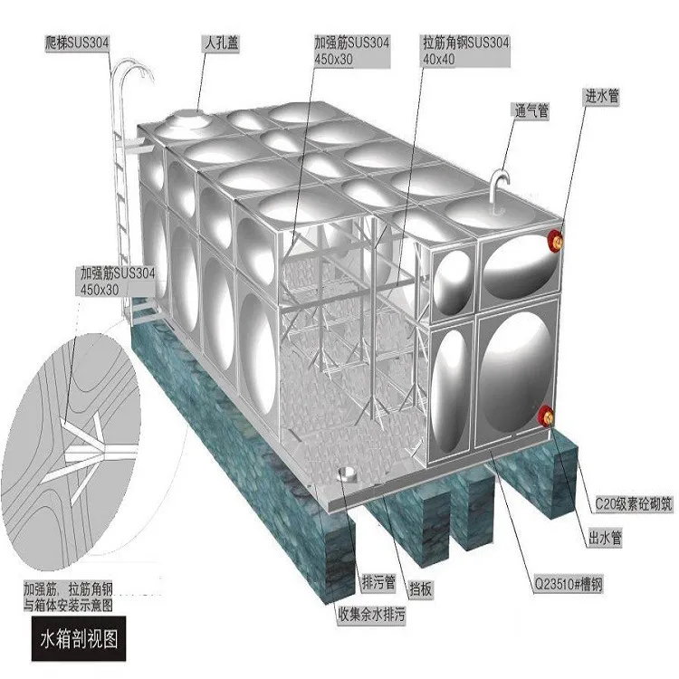
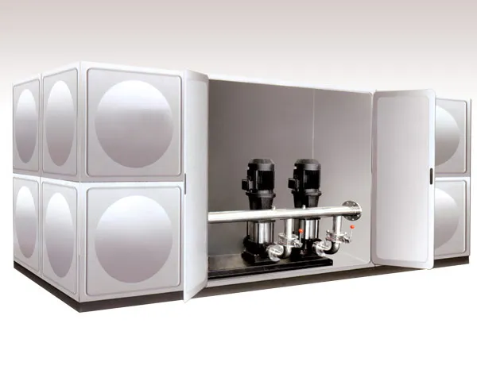
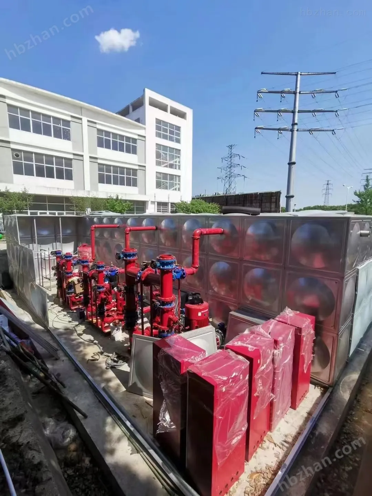
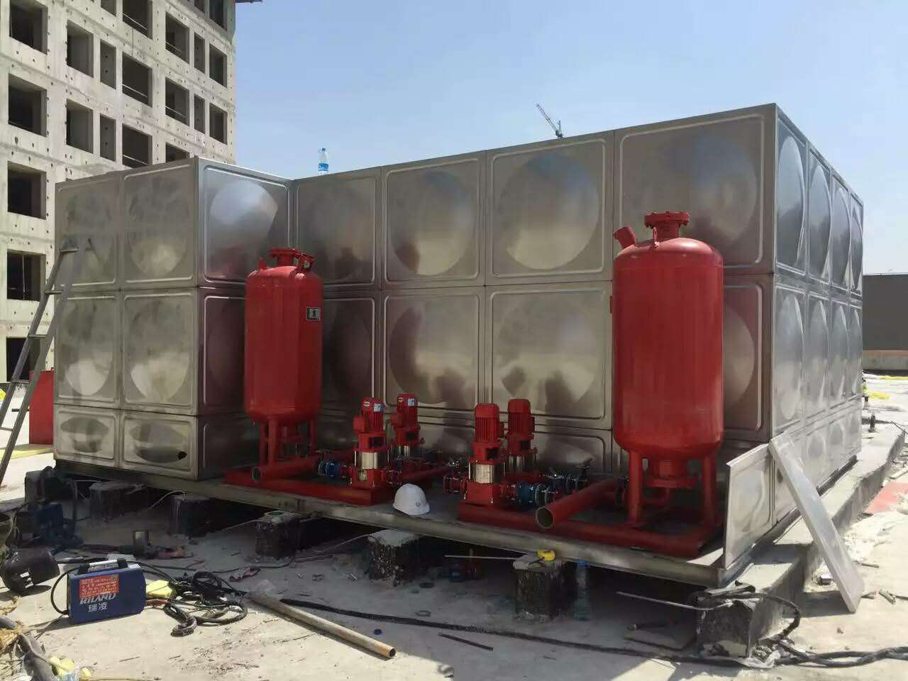
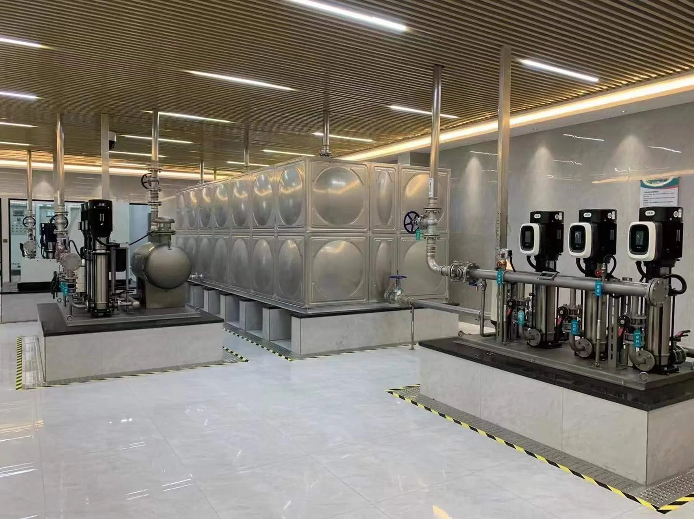

变频恒压供水设备
适用于住宅、商业综合体和学校等生活二次供水项目。
了解详情Water Supply Equipment
面向二次供水、消防增压、生活给水、污水提升和箱式供水场景，提供水泵机组、不锈钢水箱、控制柜、稳压设备及项目配套服务。

Quick Selection
输入流量、扬程、用途、建筑类型或水箱容积，快速获得水泵和水箱配套建议。
Product Center
参照供水设备官网的产品中心结构，集中展示水泵机组、水箱设备、消防供水和智慧泵房产品。

适用于住宅、商业综合体和学校等生活二次供水项目。
了解详情
支持生活水箱、消防水箱、保温水箱和装配式箱体定制。
了解详情
面向消防给水、喷淋稳压和应急补水系统的成套泵组。
了解详情
用于地下室、商业排水、污水收集和市政排涝提升场景。
了解详情适合高层建筑增压、锅炉补水、循环水和工艺补水系统。
了解详情将水箱、泵组、控制柜和管路集成为一体，便于整体交付。
了解详情支持压力控制、液位联动、缺水保护和远程运行监测。
了解详情面向二次供水改造项目，提供设备、管路、控制和运维平台。
了解详情Application Areas
覆盖建筑、市政、消防、工业和水处理项目，为不同场景提供水泵、水箱及泵房成套设备。
About Pengquan
江苏鹏泉给排水科技有限公司围绕建筑与市政水系统建设需求，提供从产品选型、设备配套、泵房方案到现场支持的一体化服务。我们关注设备运行效率、供水稳定性、箱体材质可靠性与项目交付效率，帮助客户降低泵房建设和运行维护成本。
News
了解鹏泉在供水设备、泵房配套、水箱项目和行业应用中的最新信息。
Contact Us
请提供流量、扬程、用途、水箱容积、安装位置和控制需求，我们会尽快给出设备建议。